ミンサガ マルディアスの歴史
ホーム > ミンサガ index > マルディアスの歴史
はじめに
2022年の年末から2023年の年始にかけて、河津さんがtwitterで、ミンサガのゲーム中で語られていない史実を語っていました。
河津さんのツイートとアルティマニアの神話とゲーム中の詩人の語りなどを組み合わせたらもっとミンサガの歴史の理解が深まるんじゃないかと思って作ってみたのがこのまとめ記事です。
ミンサガの世界（マルディアス）を創造した古代の神の時代から、英雄ミルザがサルーインを討伐し、さらにその後、世界を牽引した人間たちの物語をまとめています。
ミンサガのネタバレを多分に含んでいるため、ネタバレを見たくない方はブラウザをバックするか閉じてこの先には進まないようにしてください。
古代
世界を創造したのはマルダーという神。ミンサガの舞台となっている世界、マルディアスはその名前にちなんだものだと言われています。そのことを知っているのはエロールただ一人。
#ロマサガ #ミンサガ
— 河津秋敏 (@SaGa30kawazu) November 1, 2022
「ロマンシング・サガ ミンストレルソング リマスター」
タイトルが長い！ #ミンサガリマスター で行きます。#ミンサガリマスター の舞台はマルディアスという世界。この世界を創造した神マルダーにちなんだ名前。しかし、旧神マルダーを覚えているのは吟遊詩人ただ一人。
マルディアス(MARDIAS)の地図

マルディアスには多くの神々がいましたが、その一人であるサイヴァが他の神々と戦いを始めました。原因はよくわかりません。サイヴァはマルダーの妻だとも言われています。
サイヴァは神々の中でも最強の力を持ち、マルダーを含めた他の神々全部と戦っても引けを取らないほどでした。
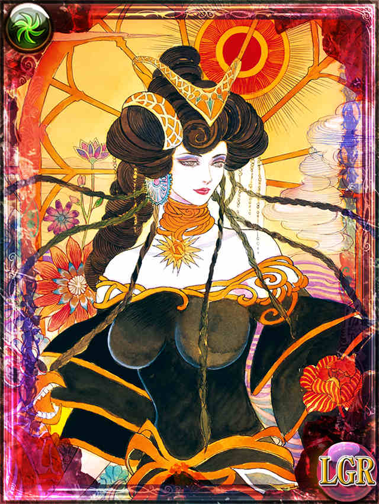
サイヴァ（画像はエンサガのもの。こちらから抜粋）
長い戦いに決着をつけるために、サイヴァは自分の小指の爪先から息子のエロール神を産みました。しかしそこはサイヴァの唯一の良心が残っていたところだったので、エロール神は善そのもののような神でした。エロールは他の神々と協力してサイヴァを倒してしまいました。
戦いで壊滅してしまったマルディアスは多くの神が見捨ててしまいましたが、エロールと大地の神ニーサだけが残りました。
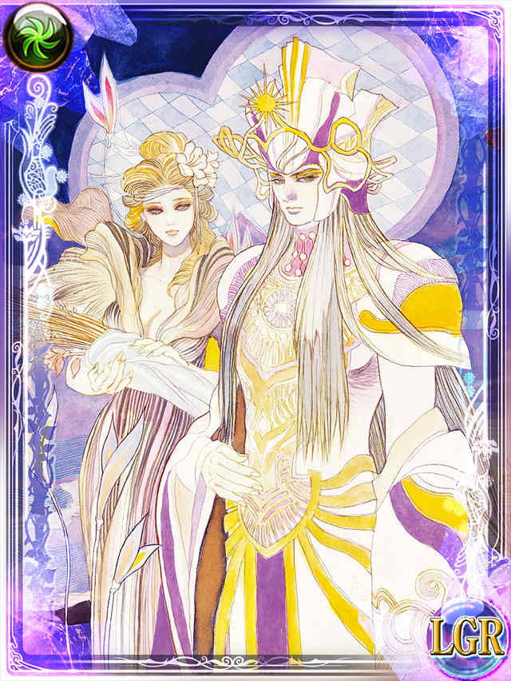
ニーサ（左）とエロール（右）（画像はエンサガのもの。こちらから抜粋）
サルーイン誕生とその後の世界
エロールとニーサは、世界を復興するために、森の神シリル、海の神ウコム、獣と月の神エリスなど、何柱かの神を産みました。
それぞれの神は、自分の領域に生命を産み、マルディアスは再び活気にあふれた世界に戻っていきました。
しかし同時に、ふたたび世界に混乱をもたらすものも生まれつつあったのです。
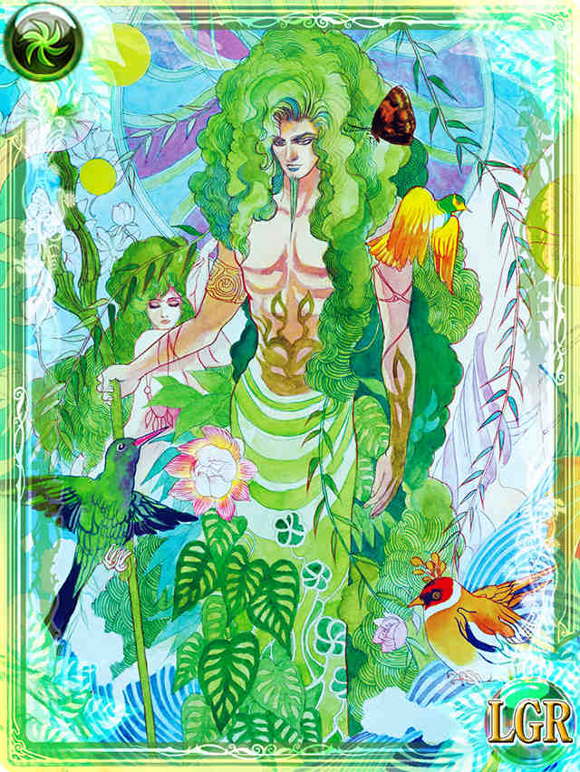
シリル（画像はエンサガのもの。こちらから抜粋）
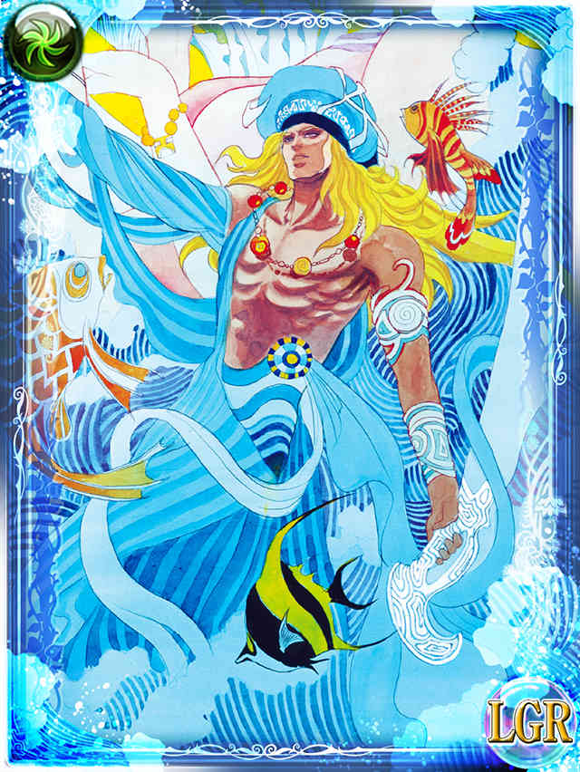
ウコム（画像はエンサガのもの。こちらから抜粋）
余談ですが、ゲーム中の詩人の語りに「ウコムと小さな石像の語り」というものがあります。一応ウコム神に関連するので動画を貼っておきます。
#ロマサガ #ミンサガ #ミンサガリマスター
— 河津秋敏 (@SaGa30kawazu) November 2, 2022
旧神達の争いの後、光の神エロールは大地の女神ニーサと共に世界の再建に取り組みます。新たな大地、新たな草木、新たな獣、新たな人を産み出します。世界は普通の生と死の営みを取り戻したかと思われました。しかし、そこに現れたのが三邪神だったのです。
エロールに倒されたサイヴァは3柱の神となり蘇りました。死者の王デス、破壊の神サルーイン、闇の女王シェラハの3神です。
次兄のサルーインはサイヴァの心臓から、長兄のデスはサイヴァの白骨から、末妹のシェラハは真黒な髪から産まれました。
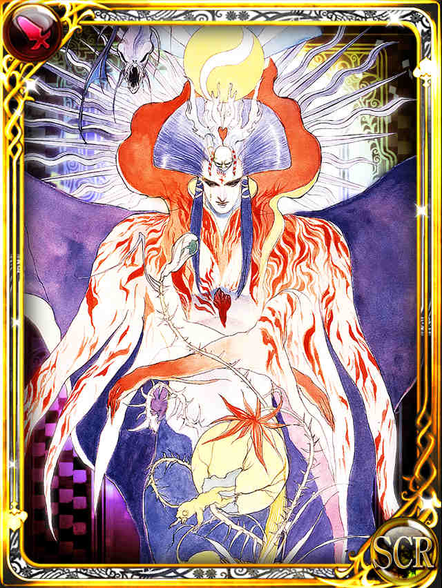
サルーイン（画像はエンサガのもの。こちらから抜粋）
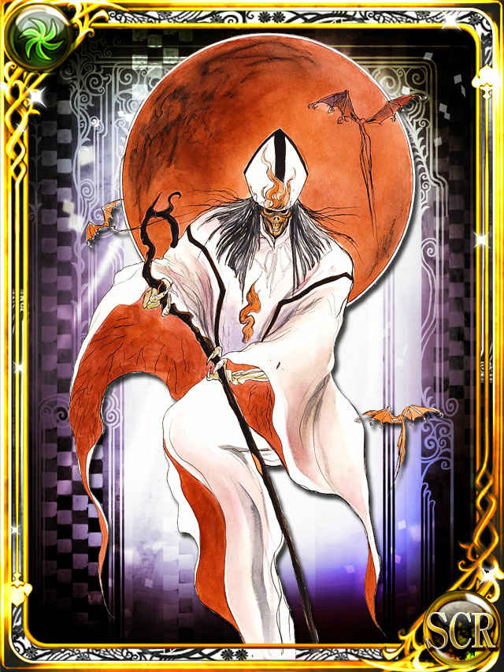
デス（画像はエンサガのもの。こちらから抜粋）
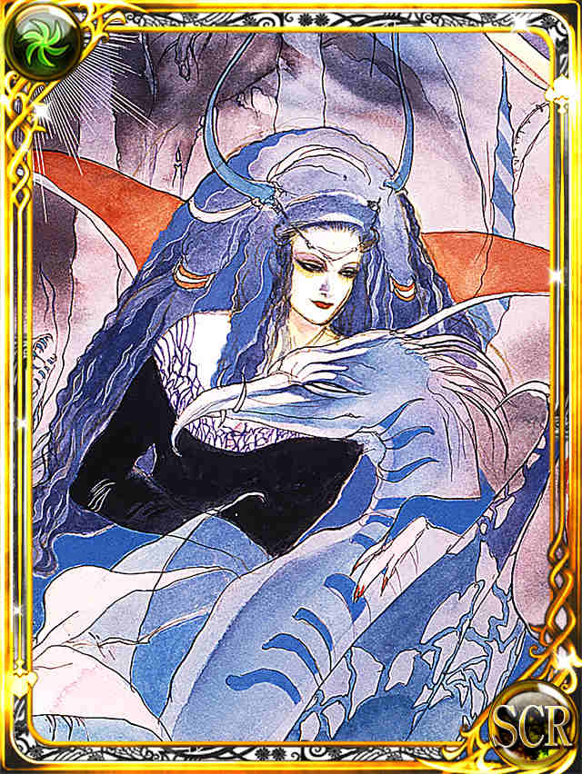
シェラハ（画像はエンサガのもの。こちらから抜粋）
#ロマサガ #ミンサガ #ミンサガリマスター
— 河津秋敏 (@SaGa30kawazu) November 3, 2022
三邪神は母なる女神サイヴァの死骸から生まれます。骨からは死を司る神デスが、心臓からは憎悪と破壊の神サルーインが、そして黒髪からは闇の女神シェラハが生まれます。彼らは新たな世界を奪い取るべく、エロールに戦いを挑みます。
#ロマサガ #ミンサガ #ミンサガリマスター
— 河津秋敏 (@SaGa30kawazu) November 4, 2022
神々の戦いが始まれば世界は再び荒廃してしまう。その事を恐れたエロールは邪神達との戦いを人の手に委ねます。人々はサルーインの産み出した魔物や、デスの配下の不死の者達に追い詰められ、シェラハの作り出す闇に呑まれます。
#ロマサガ #ミンサガ #ミンサガリマスター
— 河津秋敏 (@SaGa30kawazu) November 5, 2022
それでも希望を失わない人間達の為にエロールは赤い月の女神・愛の神アムトを産みます。闇を払う光以上に、どんな世界のどんな状況でも愛が存在する事が人々に勇気を与えました。邪神にも変化が起きます。死の神デスは冥府の支配に満足し戦いをやめました。
#ロマサガ #ミンサガ #ミンサガリマスター
— 河津秋敏 (@SaGa30kawazu) November 6, 2022
エロールはディステニィストーンを産み出し、人間達に力を与えようとします。しかし、その真の目的はシェラハの闇の力を封じる事でした。エロールはある約束をし、シェラハの指に光のダイアモンドを嵌める事に成功します。シェラハは闇の力を失います。
エロールは、闇の女王の力をそぐために、第2の月、愛の女神アムトを作りました。アムトとエリスの力で、シェラハの闇の力を相殺し、さらに、冥府の出口をふさいでデスを封じ込めました。
最後にサルーインを封じるために「ディステニィストーン」を作り、世界中に配置して結界を作りますが、その結界までサルーインを追い込むことができませんでした。
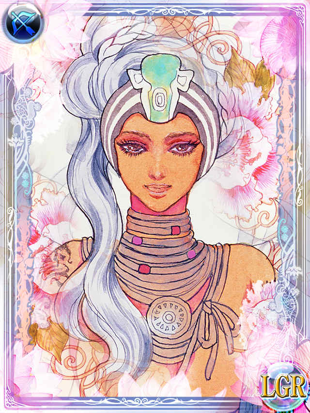
エリス（画像はエンサガのもの。こちらから抜粋）
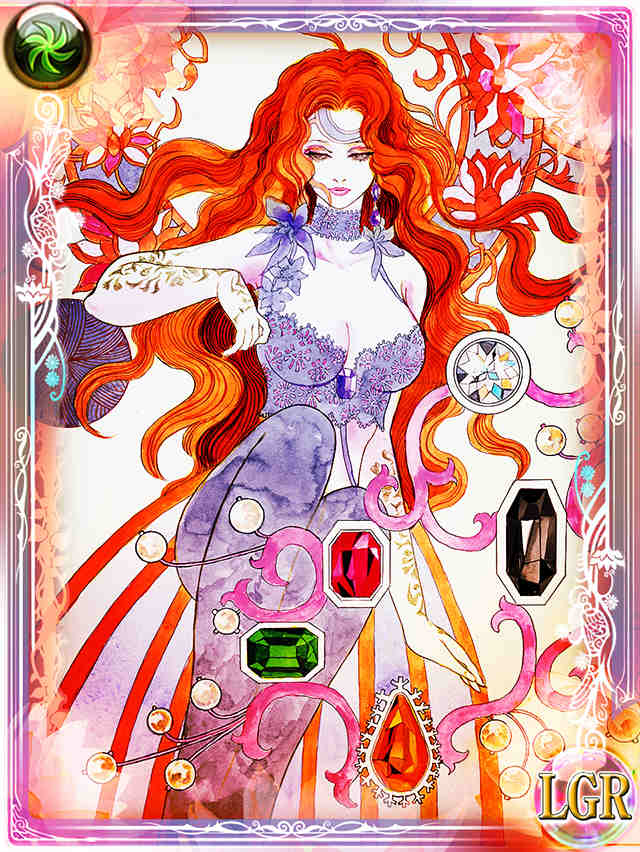
アムト（画像はエンサガのもの。こちらから抜粋）
余談ですが、ゲーム中では「二つの月の神殿」という場所があり、アムトのシンボルとエリスのシンボルが無いと中に入ることはできません。二つのシンボルがそれぞれの月を象徴しているんでしょうね。
アムトは赤い月の神で、愛の女神。
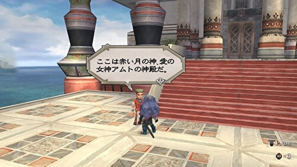
エリスは銀の月と獣たちの神。
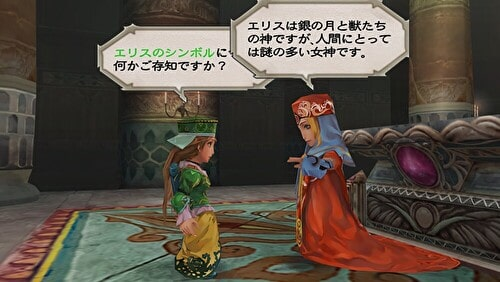
アムトとエリスのシンボルをはめ込んで二つの月の神殿に入るところと、神殿の中にあるディステニィストーンの一つ、ムーンストーンを手に入れたところ
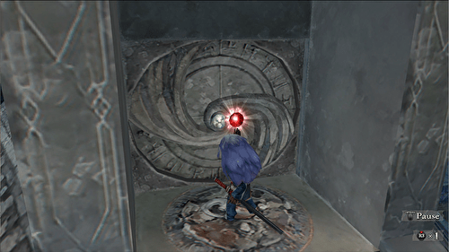
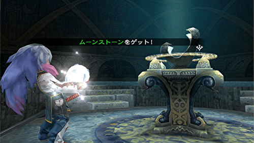
二つの月の神殿では霊獣石の鎧、兜、具足、腕輪の霊獣石シリーズの防具を手に入れることができますが、これはエリスが獣たちの神であることと関係しているのでしょう。
さらに余談ですが、ゲーム中では、エリスと森の神シリルは仲が良いとされています（画像は北エスタミルのアムト神殿での会話）。
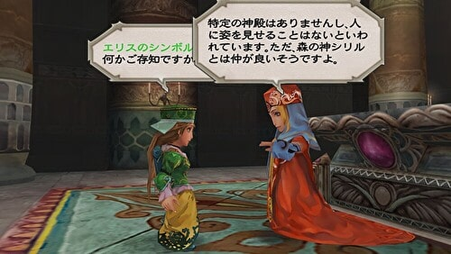
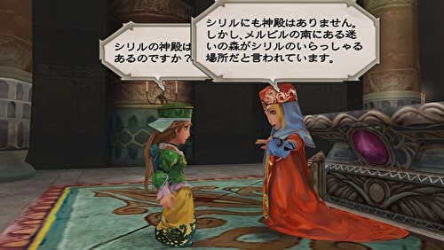
実際、エリスとシリルは普段から迷いの森の奥に一緒にいます。
シリルは大きい木の姿をしており、エリスはクローディアとずっと一緒にいた狼、シルベンの正体です（以下動画参照）。
話を戻して河津さんのツイートの続きです。
#ロマサガ #ミンサガ #ミンサガリマスター
— 河津秋敏 (@SaGa30kawazu) November 7, 2022
しかし、サルーインは全く動じません。それどころかエロールに対抗する様に、攻撃の手をエスカレートさせて行きます。まず、知恵と力に優れた巨人族を産み出します。次に火土水風それぞれを司る四体の恐るべき獣を産み出します。
この「火土水風それぞれを司る四体の恐るべき獣」というのは四天王のことを指していますが、サルーインには協力しなかったみたいですね。
フレイムタイラント
アディリス
水竜
タイニィフェザー
#ロマサガ #ミンサガ #ミンサガリマスター
— 河津秋敏 (@SaGa30kawazu) November 8, 2022
さらにサルーインは、エロールのディステニィストーンを模した自らのディステニィストーンまで作り出します。それを一つの魔物の体内に埋め込み最強の魔物を生み出そうとしたのです。その魔物ジュエルビーストは石の魔力に耐えきれず、暴走を始めます。
#ロマサガ #ミンサガ #ミンサガリマスター
— 河津秋敏 (@SaGa30kawazu) November 9, 2022
ジュエルビーストの暴走に手を焼いたサルーインでしたが、何とか封印する事に成功します。しかし、この頃から魔物も人も争いの中で生きていく事に慣れていってしまいます。人は魔物と戦うよりも隣人から奪うようになります。それは生き抜く為でした。
ジュエルビーストはこんな見た目をしています。それにしても、せっかく産み出した四天王には協力してもらえず、ジュエルビーストは暴走。サルーインも踏んだり蹴ったりで大変ですね。。。
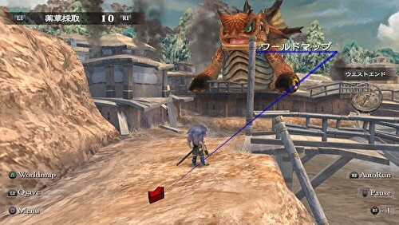
#ロマサガ #ミンサガ #ミンサガリマスター
— 河津秋敏 (@SaGa30kawazu) November 10, 2022
戦いの膠着状態は神々にとっては一瞬でしたが、人間世界では何世代もが過ぎ去りました。荒れた生活が当たり前になる中で、人々の為に自らを厳しく律する騎士も現れます。エロールは彼らに少しずつ試練を与え成長を促します。やがて伝説の騎士が生まれます。
年表
ここまでが、アルティマニアのマルディアスの歴史上、「古代」と「BS(Before Saruin)」に分類されている歴史です。神々の時代と言っていいでしょう。ここから先は英雄ミルザが登場。サルーインを討伐し、人間の時代へと遷り変わっていきます。
河津さんのツイートはこれで終わりではなく、まだまだ続いていますが、多すぎて１頁にまとめると重くなってしまうので人ごとに分けました。
以下にマルディアス史の年表をまとめています。リンクになっているところから人ごとのまとめページに飛べるようにしてみました。
因みにゲーム中のミンサガの世界はミルザがサルーインを封じてから1000年後の世界が舞台になっています。
※BSはBefore Saruin、ASはAfter Saruinの略。
| 年 | 概略 |
|---|---|
| 古代 |
|
| BS |
|
| AS 0年 | ミルザがディステニィストーンを用いてサルーインを封印するも、自身は落命。エロールにより神に列せられる |
| AS 10年頃 | |
| AS 20年 | ワロン島出身の青年メルビルがバファル地方に渡り、商船団を組織 |
| AS 43年 |
メルビルがみずから皇帝となり、バファル帝国を建国。己の名前を取り、首都をメルビルと命名。 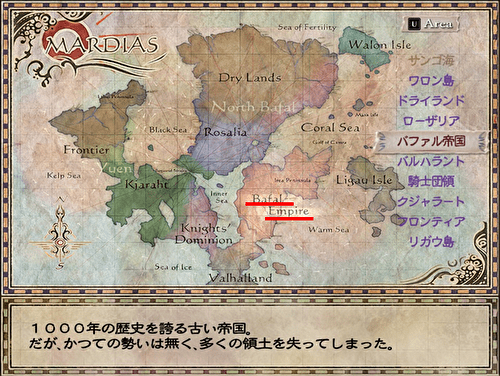 |
| AS 100年 |
メルビルに帝国図書館が完成。地下下水道の建設もはじまる。 帝国図書館は、ユリウス＝ユルヴァヌスという、帝国の法を整備した人物が所持していた、大量の書物を収めるために作られたものだということを詩人は語っています。 |
| AS 520年 | ボガスラル海峡沿岸の都市が連合し、エスタミル王国が成立。海峡の南北をつなぐ下水道が建設される。 |
| AS 550年頃 | バファル帝国レリア２世が南バファル大陸全域を征服し、北バファル大陸に進出。帝国の領土が史上最大に。 |
| AS 580年頃 | エスタミル王国にヴァンパイアが来襲。住民を恐怖におとしいれるが、アムトの神官アグネスの活躍により封印される。 |
| AS 600年頃 | バファル皇帝親衛隊のローザ・ライマンが北バファル大陸に領土を与えられ、帝国貴族の一員となる。 |
| AS 650年頃 |
イナーシーの中央に浮かぶインサ島に邪悪な魔道士が住みつき、魔の島と呼ばれるようになる。 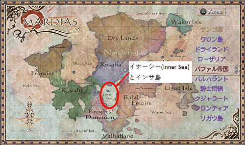 これは魔の島に関する詩人の語りです。 |
| AS 700年 |
|
| AS 750年頃 |
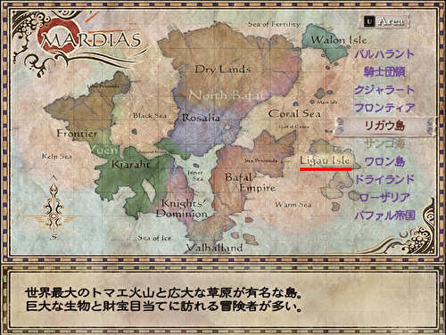 |
| AS 800年頃 |
（アルティマニアには記載はないが、河津さんのこのツイートから、クジャル族の首長ユスフが冥府に旅立つのはおそらくこの辺）
|
| AS 852年 | ライマン家のハインリヒ2世が、北バファルの独立を掲げて帝国との闘争を開始（北バファル戦争勃発） |
| AS 864年 |
ハインリヒ2世が北バファルの独立を宣言し、ローザリア王国を建国。国名はライマン家初代、ローザにちなんだもの 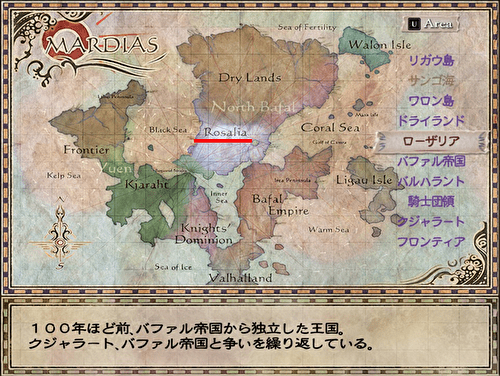 |
| AS 880年 | ハインリヒ2世死去。世継ぎがいなかったため、ライマン家の傍流である、バーズリー家のレオポルドが王位を継承 |
| AS 899年 | ヨービルの戦い。ローザリア国王カール１世が帝国軍に圧勝し、帝国勢力を北バファル大陸から一掃する。（北バファル戦争終結） |
| AS 903年 |
クジャラートがエスタミル王国を征服。首都をタルミッタからエスタミルに遷す。 画像は北エスタミルの住民との会話。ゲーム開始はAS 1000年頃なので、100年ほど前と言っている。 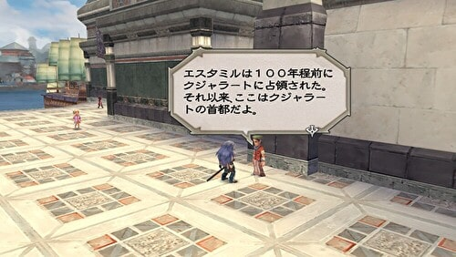 |
| AS 925年 | クジャラートがローザリアに侵入。カール１世がアルツールの戦いにてクジャラート軍を撃退し、現在の国境が画定する |
| AS 928年 | |
| AS 930年 |
クジャラートが他国への侵攻を断念。かわって、フロンティアの開拓に乗り出す。 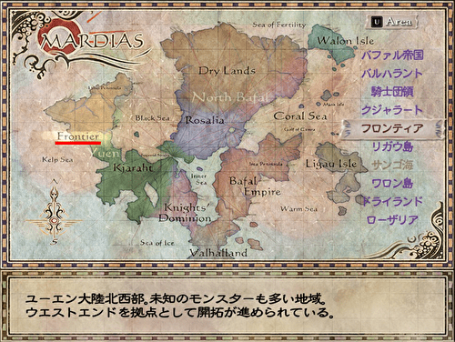 |
| AS 1000年頃 |
ゲームスタート 1000年の時を経て復活しようとしているサルーインを阻止するという使命を、大地の神ニーサから言い渡されたのがミンサガの主人公です。 ※ミンサガのアルティマニアでは、ゲームスタートはAS1000年となっていますが、以下の河津さんのツイートを見るとゲーム開始はAS 998年でサルーイン討伐がAS 1000年なので、年表上はAS 1000年『頃』としています。
|
#ロマサガ #ミンサガRS #ミンサガリマスター
— 河津秋敏 (@SaGa30kawazu) January 9, 2023
ディステニィストーンを巡る伝説に、新たなページを付け加える英雄達。私は彼らと共に旅をし、彼らの冒険を詩にしましょう。そしていつの日か、人々の前で語りましょう。彼らが見た夢と歩んだ道を。
ご静聴有難うございました。神々が共に在らんことを。
ロマンシング サガ -ミンストレルソング- アルティマニア (Kindle版)

参考
- サガ用語辞典 Wiki 【マルディアス】
- ニコニコ大百科 海賊シルバー
- 肝胆ブログ ミンサガ考察「エンディング後の世界がどうなるか」
- すったのとまり木
- ロマンシングサガ ミンストレルソングの世界観
- たまマガ 【ミンサガリマスター】詩人の語り全部聞くチャートと三拠点制覇について
- エンサガDB エロール&ニーサ
- エンサガDB シリル
- エンサガDB ウコム
- エンサガDB エリス
- エンサガDB アムト
- エンサガDB サルーイン
- エンサガDB デス
- エンサガDB シェラハ
- エンサガDB ミルザ
- エンサガDB オイゲン